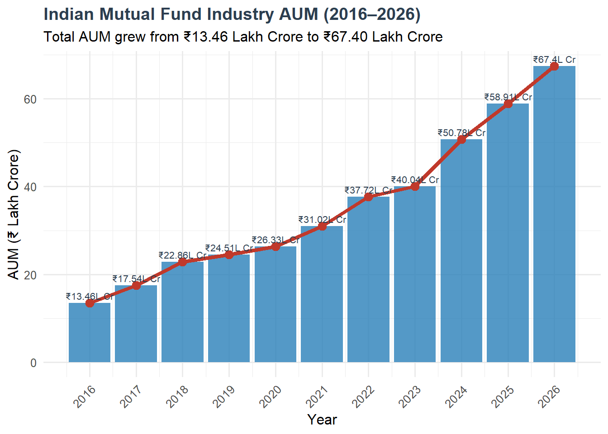
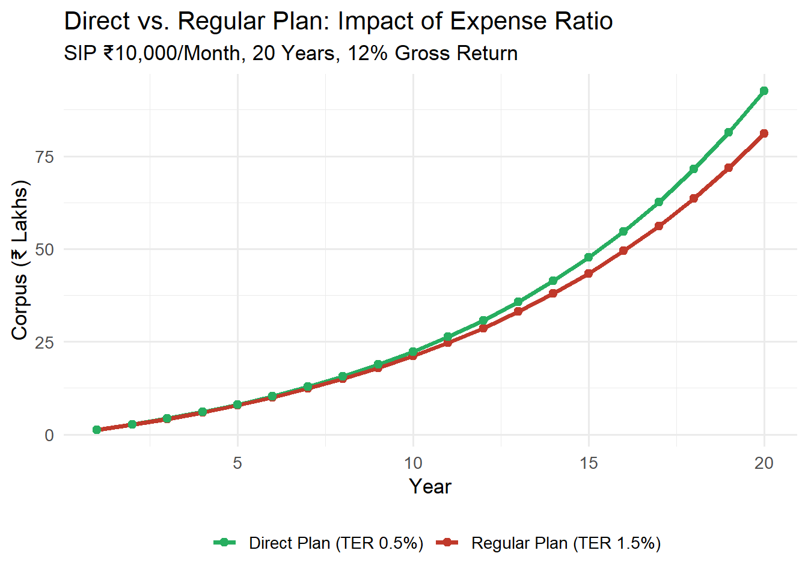
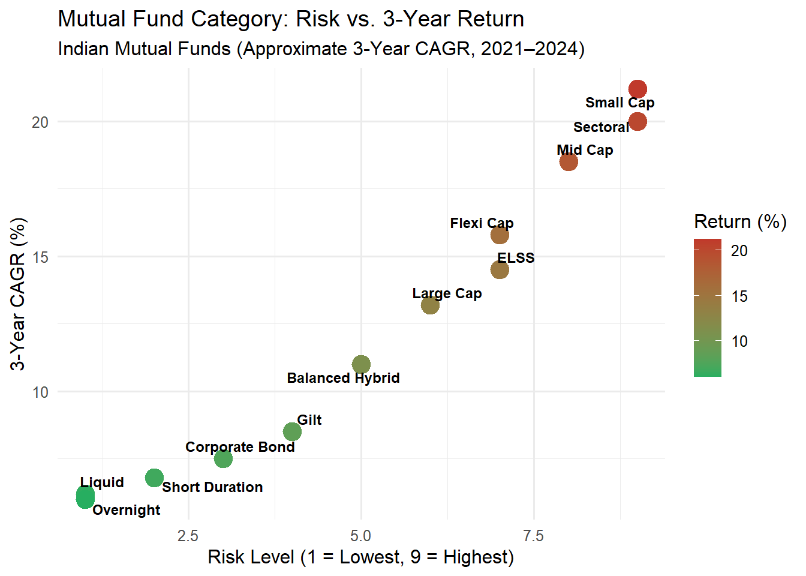
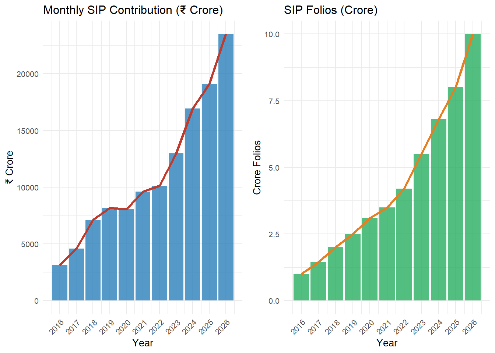
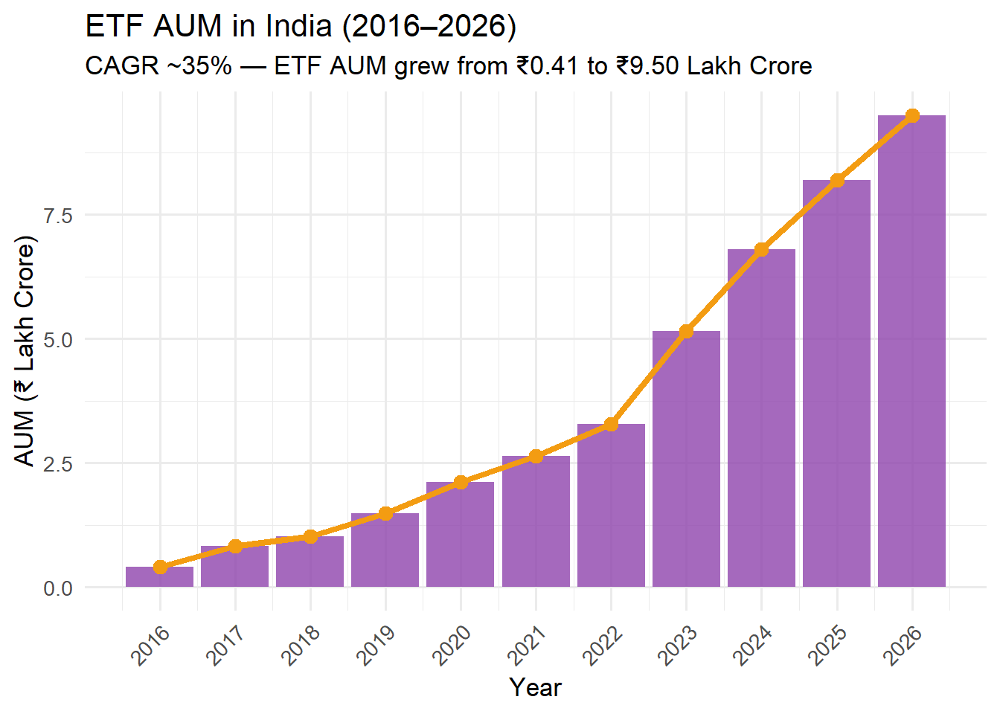
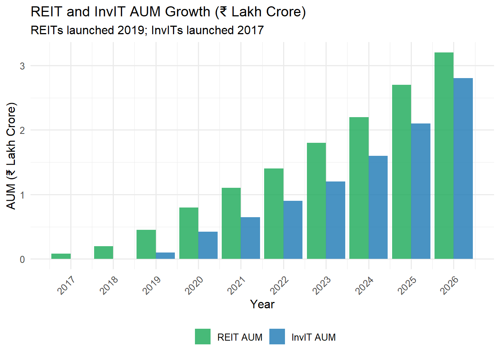

Chapter 2
Learning Objectives
After completing this unit, students will be able to:
- Explain the meaning, features, and types of shares, debentures, and other financial securities
- Distinguish between equity and preference shares, and among the types of each
- Analyse the structure, advantages, and risks of mutual fund investments
- Calculate Net Asset Value (NAV) and Expense Ratio with numerical illustrations
- Describe the SEBI categorisation of mutual fund schemes (2017–present)
- Evaluate Exchange Traded Funds (ETFs), REITs, and InvITs as investment instruments
- Assess the growth and future prospects of ETFs, REITs, and InvITs in the Indian market
2.4 Debentures
2.4.1 Meaning
A debenture is a debt instrument issued by a company acknowledging its indebtedness. It represents a long-term loan to the company. Debenture holders are creditors, not owners, and have a legal right to receive: - Periodic interest (called coupon) - Repayment of principal at maturity
In India, debentures issued to public must be listed on stock exchanges (NSE or BSE debt segment) and rated by credit rating agencies like CRISIL, ICRA, CARE, or India Ratings.
2.4.2 Types of Debentures
| Classification Basis | Type | Description |
|---|---|---|
| On Security | Secured Debentures | Backed by charge on company’s assets; safer for investors |
| Unsecured Debentures | No asset backing; higher risk, higher yield | |
| On Convertibility | Fully Convertible Debentures (FCDs) | Entire amount converted to equity on specified date |
| Partly Convertible Debentures (PCDs) | Partial conversion to equity; balance redeemed | |
| Non-Convertible Debentures (NCDs) | Not convertible; pure debt instrument; most common in India | |
| On Redemption | Redeemable / Irredeemable | Redeemable at par/premium on maturity; irredeemable rare |
| On Coupon | Fixed / Floating Rate | Fixed coupon vs. linked to MIBOR/T-Bill rate |
Source: Compiled from Companies Act, 2013 and SEBI (LODR) Regulations, 2015.
Indian NCD Market: Non-Convertible Debentures (NCDs) have become a popular retail investment avenue in India. Bajaj Finance, HDFC, Shriram Transport Finance, and Tata Capital have issued retail NCDs with coupon rates ranging from 7.5% to 10% p.a., offering returns superior to bank FDs with credit risk.
2.5 Mutual Funds
2.5.1 Meaning and Structure
A mutual fund is a professionally managed collective investment vehicle that pools money from many investors and invests in a diversified portfolio of securities. In India, mutual funds are regulated by SEBI under the SEBI (Mutual Funds) Regulations, 1996 (amended multiple times through 2023).
Figure 2.1: Three-tier Structure of Indian Mutual Funds
Three-Tier Structure: 1. Sponsors — the parent company that establishes the mutual fund (e.g., HDFC Ltd. → HDFC AMC) 2. Trustees — independent board overseeing the AMC, protecting investors’ interests 3. AMC (Asset Management Company) — manages investments, employs fund managers
Key Industry Statistics:

Figure 2.1: Figure 2.2: Indian Mutual Fund Industry AUM Growth (2016–2026)
Source: Compiled from RBI, SEBI, NSE, BSE, AMFI and Government Reports (Latest Available Data).
2.5.2 Advantages of Mutual Funds
- Professional Management — Experienced fund managers conduct research and manage portfolios
- Diversification — Even ₹500 SIP invests in 50–100 stocks
- Affordability — Start SIP with as low as ₹100/month
- Liquidity — Open-end funds redeemable any business day at NAV
- Transparency — Daily NAV disclosure; monthly portfolio disclosure
- Regulatory Protection — SEBI regulations protect investors; AMFI code of conduct
- Tax Efficiency — ELSS funds offer Section 80C benefits; long-term capital gains taxed at 10% (>₹1 lakh)
- Flexibility — SIP, SWP, STP options; switch between funds
- Economies of Scale — Lower transaction costs due to bulk purchases
- Variety — 40+ AMCs, 1,500+ schemes across all risk profiles
2.5.3 Risks in Mutual Fund Investment
| Risk Type | Description | Affected Funds |
|---|---|---|
| Market Risk | Portfolio value falls with market | Equity funds |
| Credit Risk | Issuer defaults on bond payment | Debt funds |
| Interest Rate Risk | Bond prices fall when rates rise | Debt funds |
| Liquidity Risk | Fund unable to sell assets | Close-end funds |
| Concentration Risk | Overdependence on few stocks/sectors | Thematic funds |
| Currency Risk | Loss from foreign exchange movement | International funds |
| Manager Risk | Fund manager’s incorrect decisions | All actively managed funds |
| Inflation Risk | Returns don’t beat inflation | Conservative funds |
Source: Compiled from RBI, SEBI, NSE, BSE, AMFI and Government Reports (Latest Available Data).
2.7 Expense Ratio
2.7.1 Meaning and Importance
The Expense Ratio (ER) is the annual cost charged by a mutual fund to manage an investor’s money, expressed as a percentage of the fund’s daily average AUM. It covers: - Fund management fee (largest component) - Trustee fee - Registrar and transfer agent fee - Marketing and distribution expenses (only in Regular Plans) - Audit, legal, and custodian fees
\[\boxed{\text{Expense Ratio (\%)} = \frac{\text{Total Annual Fund Expenses}}{\text{Average Daily AUM}} \times 100}\]
SEBI Expense Ratio Limits (as of 2024):
| AUM Slab | Equity TER Max | Debt TER Max | Index/ETF Max |
|---|---|---|---|
| First ₹500 Cr | 2.25% | 2.00% | 1.00% |
| Next ₹250 Cr | 2.00% | 1.75% | 1.00% |
| Next ₹1,250 Cr | 1.75% | 1.50% | 1.00% |
| Next ₹3,000 Cr | 1.60% | 1.35% | 1.00% |
| Next ₹5,000 Cr | 1.50% | 1.25% | 1.00% |
| Next ₹40,000 Cr | Reduce by 0.05% per ₹5,000 Cr | Reduce by 0.05% | 1.00% |
| Balance above ₹50,000 Cr | 1.05% | 0.80% | 1.00% |
Source: Compiled from RBI, SEBI, NSE, BSE, AMFI and Government Reports (Latest Available Data).
2.7.2 Expense Ratio Calculation — Worked Example
Example 2.3: A mutual fund has daily average AUM of ₹12,000 Crore. Annual expenses: Management fee ₹108 Cr, Distribution ₹36 Cr, Trustee fee ₹6 Cr, Others ₹10 Cr. Calculate Total Expense Ratio.
aum <- 12000 # Crore
management_fee <- 108
distribution <- 36
trustee <- 6
others <- 10
total_expenses <- management_fee + distribution + trustee + others
TER <- (total_expenses / aum) * 100
cat("Total Annual Expenses: ₹", total_expenses, "Crore\n")## Total Annual Expenses: ₹ 160 Crore## Average AUM: ₹ 12000 Crore## Total Expense Ratio (TER): 1.333 %## Impact on ₹1 Lakh invested: 1333 per annumDirect vs. Regular Plans: SEBI mandated Direct Plans in 2013 — these exclude distributor commissions and hence have lower expense ratios by 0.5%–1.2%. Over 20 years, this difference compounds significantly.
monthly_sip <- 10000
months <- 240
gross_return <- 0.12 / 12 # Monthly
# Regular plan: 12% gross, 1.5% TER → ~10.5% net return
regular_return <- (0.12 - 0.015) / 12
direct_return <- (0.12 - 0.005) / 12 # Direct: 0.5% TER
fv_regular <- monthly_sip * (((1 + regular_return)^months - 1) / regular_return)
fv_direct <- monthly_sip * (((1 + direct_return)^months - 1) / direct_return)
cat("20-Year SIP in Regular Plan: ₹", format(round(fv_regular), big.mark = ","), "\n")## 20-Year SIP in Regular Plan: ₹ 8,105,049## 20-Year SIP in Direct Plan: ₹ 9,251,011cat("Extra wealth from Direct Plan: ₹", format(round(fv_direct - fv_regular), big.mark = ","), "\n")## Extra wealth from Direct Plan: ₹ 1,145,962# Plot comparison
year_seq <- 1:20
corpus_regular <- sapply(year_seq, function(y) {
m <- y * 12
monthly_sip * (((1 + regular_return)^m - 1) / regular_return)
})
corpus_direct <- sapply(year_seq, function(y) {
m <- y * 12
monthly_sip * (((1 + direct_return)^m - 1) / direct_return)
})
plot_df <- data.frame(
Year = rep(year_seq, 2),
Corpus = c(corpus_regular, corpus_direct) / 100000,
Plan = rep(c("Regular Plan (TER 1.5%)", "Direct Plan (TER 0.5%)"), each = 20)
)
ggplot(plot_df, aes(x = Year, y = Corpus, color = Plan)) +
geom_line(size = 1.4) +
geom_point(size = 2) +
scale_color_manual(values = c("Regular Plan (TER 1.5%)" = "#c0392b",
"Direct Plan (TER 0.5%)" = "#27ae60")) +
labs(title = "Direct vs. Regular Plan: Impact of Expense Ratio",
subtitle = "SIP ₹10,000/Month, 20 Years, 12% Gross Return",
x = "Year", y = "Corpus (₹ Lakhs)", color = "") +
theme_minimal(base_size = 13) +
theme(legend.position = "bottom")
Figure 2.2: Figure 2.3: Direct Plan vs. Regular Plan Wealth Creation (20-Year SIP ₹10,000/Month)
Source: Compiled from RBI, SEBI, NSE, BSE, AMFI and Government Reports (Latest Available Data).
2.8 Types of Mutual Funds
2.8.1 SEBI Categorisation of Mutual Fund Schemes (2017)
SEBI issued a landmark circular on mutual fund categorisation and rationalisation in October 2017 (effective June 2018), mandating that each AMC can offer only one scheme per category. This brought standardisation and comparability to India’s mutual fund landscape.
Figure 2.4: SEBI Categorisation of Mutual Fund Schemes (2017)
2.8.2 Major Categories — Detailed Analysis
A. Large Cap Funds - Must invest minimum 80% in top 100 companies by market capitalisation (as defined by AMFI) - Lower risk than mid/small cap; benchmark: Nifty 50 / Sensex - Suitable for conservative equity investors - Examples: Axis Bluechip Fund, Mirae Asset Large Cap Fund, ICICI Prudential Bluechip Fund
B. Mid Cap Funds - Must invest minimum 65% in 101st–250th companies by market cap - Higher growth potential; higher volatility - Examples: HDFC Mid-Cap Opportunities Fund, Kotak Emerging Equity Fund
C. Small Cap Funds - Minimum 65% in 251st company onwards by market cap - Highest growth potential and highest risk among equity categories - Examples: Nippon India Small Cap Fund, SBI Small Cap Fund
D. ELSS (Equity Linked Savings Scheme) - Minimum 80% in equity - 3-year lock-in (shortest among 80C investments) - Section 80C benefit up to ₹1.5 lakh - Examples: Axis Long Term Equity, Mirae Asset Tax Saver Fund
E. Liquid Funds - Invest in money market instruments with maturity up to 91 days - Very low risk; returns slightly above savings account (5.5–6.5% p.a.) - Suitable for emergency fund management
F. Gilt Funds - Invest 80% minimum in government securities - Zero credit risk; high interest rate risk - Suitable when interest rates are expected to fall

Figure 2.3: Figure 2.5: Mutual Fund Category Risk-Return Matrix (2016–2026)
Source: Compiled from RBI, SEBI, NSE, BSE, AMFI and Government Reports (Latest Available Data).
SIP Growth in India (2016–2026):

Figure 2.4: Figure 2.6: SIP Monthly Contribution and Folios (2016–2026)
Source: Compiled from RBI, SEBI, NSE, BSE, AMFI and Government Reports (Latest Available Data).
2.9 Exchange Traded Funds (ETFs)
2.9.1 Meaning and Structure
An Exchange Traded Fund (ETF) is a mutual fund that is listed and traded on stock exchanges like shares, while tracking a specific index, commodity, or basket of assets. ETFs combine the diversification benefits of mutual funds with the trading flexibility of stocks.
Key Features of ETFs: - Passively managed (track an index) - Lower expense ratio than actively managed funds (0.05%–0.50%) - Real-time pricing (unlike NAV-based mutual funds) - Can be bought/sold anytime during market hours - Minimum investment = 1 unit (at market price) - No exit load in most cases - Require demat account (unlike regular mutual funds)
ETF vs. Index Fund:
| Feature | ETF | Index Fund |
|---|---|---|
| Trading | Real-time on exchange | End-of-day NAV |
| Demat | Required | Not required |
| Minimum Amount | 1 unit | ₹100–₹500 SIP |
| Expense Ratio | 0.05%–0.25% | 0.15%–0.50% |
| Tracking Error | Slightly higher | Lower |
| Liquidity | Higher (intraday) | T+3 redemption |
ETF Growth in India:

Figure 2.5: Figure 2.7: ETF AUM Growth in India (2016–2026)
Source: Compiled from RBI, SEBI, NSE, BSE, AMFI and Government Reports (Latest Available Data).
Popular ETFs in India (2024):
| ETF Name | Tracks | AUM (₹ Cr) | Expense Ratio |
|---|---|---|---|
| Nippon India Nifty 50 BeES | Nifty 50 | ~12,000 | 0.04% |
| HDFC Nifty 50 ETF | Nifty 50 | ~10,500 | 0.10% |
| SBI Nifty 50 ETF | Nifty 50 | ~1,10,000+ (EPFO) | 0.07% |
| Nippon India Junior BeES | Nifty Next 50 | ~3,800 | 0.13% |
| ICICI Prudential Midcap ETF | Nifty Midcap 150 | ~800 | 0.18% |
| Nippon India Gold BeES | Gold (MCX) | ~8,500 | 0.82% |
| Nippon India Silver ETF | Silver (MCX) | ~1,200 | 0.65% |
| Bharat Bond ETF April 2030 | PSU Bonds Ladder | ~15,000 | 0.0005% |
Source: Compiled from RBI, SEBI, NSE, BSE, AMFI and Government Reports (Latest Available Data).
Special Feature: EPFO and ETFs
A landmark development in Indian capital markets was the EPFO’s decision in 2015 to invest 5% (later increased to 15%) of incremental EPF corpus in equity ETFs tracking Nifty 50 and Sensex. This makes EPFO one of the largest domestic institutional investors through the ETF route, protecting subscribers’ retirement savings through passive equity exposure.
2.10 Real Estate Investment Trusts (REITs)
2.10.1 Meaning and Structure
A Real Estate Investment Trust (REIT) is a listed entity that owns, operates, or finances income-generating real estate assets. REITs allow retail investors to invest in large commercial properties (office parks, malls, hospitals) with a minimum of ₹10,000–15,000.
SEBI introduced REIT regulations in 2014, and the first Indian REIT — Embassy Office Parks REIT — was listed on NSE in April 2019.
Structure of a REIT:
Figure 2.8: Structure of Indian REITs
Mandatory Requirements under SEBI REIT Regulations: - Minimum 80% assets in completed, rent-generating properties - Minimum 90% distributable cash must be distributed to unit holders every 6 months - Must be listed on NSE or BSE - Minimum public float: 25% of total units
Indian REITs (2024):
| REIT | Listed | Portfolio | AUM (₹ Cr) | Distribution Yield |
|---|---|---|---|---|
| Embassy Office Parks REIT | April 2019 | 45 Mn sqft (Bengaluru, Mumbai, NCR) | ~42,000 | ~6.5% |
| Mindspace Business Parks REIT | August 2020 | 32 Mn sqft (Mumbai, Hyderabad, Pune) | ~25,000 | ~6.2% |
| Brookfield India REIT | February 2021 | 27 Mn sqft (NCR, Mumbai, Kolkata) | ~18,000 | ~7.5% |
| Nexus Select Trust (Retail REIT) | May 2023 | 17 retail malls across India | ~15,000 | ~6.0% |
Source: Compiled from RBI, SEBI, NSE, BSE, AMFI and Government Reports (Latest Available Data).
REITs as an Investment: - Rental income from commercial properties distributed quarterly - Capital appreciation as property values rise - Lower entry barrier vs. direct real estate - Portfolio diversification (real estate exposure without physical ownership) - Tax treatment: REIT distributions partly taxable as business income, partly as dividend
2.11 Infrastructure Investment Trusts (InvITs)
2.11.1 Meaning and Structure
An Infrastructure Investment Trust (InvIT) is a collective investment vehicle — similar in structure to REITs — that pools investor money to invest in operational infrastructure projects such as roads, power transmission lines, gas pipelines, and telecom towers.
SEBI introduced InvIT regulations in 2014. India’s first InvIT — IRB InvIT Fund — listed in May 2017.
REIT vs. InvIT:
| Feature | REIT | InvIT |
|---|---|---|
| Assets | Commercial real estate | Infrastructure projects |
| Revenue Source | Rental income | Toll, transmission charges, gas fees |
| Underlying Asset | Buildings / properties | Roads, pipelines, towers |
| Risk | Lower (stable rents) | Medium (traffic/usage-dependent) |
| First India Listing | Embassy REIT (2019) | IRB InvIT (2017) |
Source: Compiled from RBI, SEBI, NSE, BSE, AMFI and Government Reports (Latest Available Data).
Major Listed InvITs in India (2024):
| InvIT | Assets | Listed | Yield |
|---|---|---|---|
| IRB InvIT Fund | National highways (BOT) | May 2017 | ~10–12% |
| IndInfravit Trust | Highway NHAI projects | March 2018 | ~11% |
| Powergrid InvIT | Power transmission assets | May 2021 | ~10% |
| India Grid Trust (IndiGrid) | Power transmission (Sterlite) | June 2017 | ~11–12% |
Source: Compiled from RBI, SEBI, NSE, BSE, AMFI and Government Reports (Latest Available Data).
Growth of REITs and InvITs:

Figure 2.6: Figure 2.9: REIT and InvIT AUM Growth in India (2017–2026)
Source: Compiled from RBI, SEBI, NSE, BSE, AMFI and Government Reports (Latest Available Data).
Research Corner 2.1: The Future of Passive Investing in India
The global shift from active to passive investing is accelerating in India. Key research observations:
SPIVA India Scorecard (S&P, 2024) shows that over 10 years, over 80% of large-cap active funds underperformed the Nifty 50 TRI (Total Return Index).
EPFO’s ETF mandate has democratised passive investing, with ₹2.5+ lakh crore invested in equity ETFs by EPFO as of 2024.
Zero-commission direct plans and growing financial literacy are driving retail investors toward direct index ETFs.
Research Gap: The tracking error of Indian ETFs — especially for mid-cap and small-cap indices — remains significantly higher than developed market ETFs. Research into optimal ETF creation/redemption mechanisms for Indian markets is needed.
2.12 Summary
Shares are units of company ownership. Equity shareholders are residual claimants with voting rights; preference shareholders have priority in dividend and capital repayment.
Debentures are debt instruments — NCDs, FCDs, and PCDs represent the primary classifications used in Indian markets. CRISIL, ICRA, and CARE ratings guide investor decisions.
Mutual funds are the most accessible financial investment vehicle for retail investors — professionally managed, diversified, and SEBI-regulated. India’s MF industry crossed ₹67 lakh crore AUM in 2026.
NAV is the per-unit value of a mutual fund, calculated daily. Total returns depend on NAV appreciation plus dividend distributions.
Expense Ratio directly erodes investor returns. Direct plans save 0.5%–1.2% annually, compounding to significant wealth over 15–20 years.
SEBI’s 2017 categorisation brought standardisation — one scheme per category per AMC — enabling investors to make meaningful comparisons.
ETFs track indices passively at very low cost and can be traded intraday. EPFO’s ETF mandate is a landmark development for Indian capital markets.
REITs enable retail investors to invest in commercial real estate with ₹10,000–15,000, earning distribution yields of 6–8% p.a. Four REITs are listed in India (2024).
InvITs invest in operating infrastructure projects (roads, power lines, gas pipelines), offering yields of 10–12% p.a. with government-backed revenue streams.
2.13 Key Terms
- Share — Unit of ownership in a company
- Equity Share — Ordinary share with full ownership rights and residual claims
- Preference Share — Share with priority dividend rights over equity
- Cumulative Preference Share — Unpaid dividends accumulate for future payment
- Convertible Preference Share — Convertible into equity shares at specified date
- Debenture — Long-term debt instrument issued by companies
- NCD (Non-Convertible Debenture) — Debenture that cannot be converted to equity
- ESOP — Employee Stock Option Plan; equity compensation for employees
- Bonus Share — Free share issued to existing shareholders from reserves
- Rights Issue — Offer to existing shareholders to buy new shares at discount
- Mutual Fund — Pooled investment vehicle managed by professional AMC
- AMC — Asset Management Company; manages mutual fund investments
- NAV — Net Asset Value; per-unit market value of mutual fund
- Expense Ratio / TER — Annual cost charged by fund as % of AUM
- Direct Plan — Mutual fund plan without distributor commission
- Regular Plan — Mutual fund plan through distributors with higher TER
- SIP — Systematic Investment Plan; regular fixed-amount investment
- ELSS — Equity Linked Savings Scheme; 3-year lock-in, Section 80C benefit
- Large Cap Fund — Fund investing 80%+ in top 100 companies by market cap
- Mid Cap Fund — Fund investing 65%+ in 101st–250th companies by market cap
- Gilt Fund — Fund investing 80%+ in government securities
- ETF — Exchange Traded Fund; passively managed, exchange-listed index fund
- Tracking Error — Deviation of ETF/Index fund returns from benchmark index
- REIT — Real Estate Investment Trust; listed vehicle owning commercial properties
- InvIT — Infrastructure Investment Trust; listed vehicle owning infrastructure assets
- Distribution Yield — Annual distributions as % of unit price (REIT/InvIT)
- AMFI — Association of Mutual Funds in India; industry body
- DVR Shares — Differential Voting Rights shares; promoted by SEBI in 2019
- Sweat Equity — Shares issued to employees/directors for non-cash contributions
- EPFO — Employees’ Provident Fund Organisation; invests in equity ETFs
2.14 Review Questions — Unit II
2.14.1 Very Short Answer Questions
- What is the difference between equity share and preference share in one sentence?
- Name four types of preference shares.
- What is the full form of ELSS?
- State the SEBI-mandated distribution percentage for REITs.
- Who introduced ETFs in India and when was the first equity ETF listed?
- What is the minimum lock-in period for ELSS?
- Define Expense Ratio.
- State the SEBI categorisation rule for large cap funds.
- Name the four listed REITs in India as of 2024.
- What is the difference between an NCD and an FCD?
2.14.2 Essay Questions
- Explain the SEBI categorisation of mutual fund schemes (2017). Why was this circular significant for the Indian mutual fund industry? Discuss with examples.
- “Direct plans in mutual funds are always superior to regular plans for long-term investors.” Do you agree? Justify with numerical illustrations showing the impact of expense ratio over 20 years.
- Critically evaluate REITs as an investment avenue for retail investors in India. Discuss the regulatory framework, available REITs, and their historical performance.
- Explain the structure and growth of InvITs in India. How do they differ from REITs? Which sectors are currently represented in Indian InvITs?
- Discuss the role of ETFs in democratising equity investment in India. Evaluate the EPFO’s ETF mandate and its impact on domestic capital markets.
2.15 MCQs — Unit II (Selected)
1. The SEBI (Mutual Fund) Regulations were first issued in: - (A) 1992 (B) 1996 ← Correct (C) 2000 (D) 2003
Answer: B. SEBI (Mutual Fund) Regulations were enacted in 1996.
2. NAV of a mutual fund is calculated: - (A) Weekly (B) Monthly (C) Daily ← Correct (D) Quarterly
Answer: C. NAV is disclosed daily on business days by all open-end mutual funds.
3. The first REIT in India was: - (A) Mindspace REIT (B) Brookfield REIT (C) Embassy Office Parks REIT ← Correct (D) Nexus Select Trust
Answer: C. Embassy Office Parks REIT was listed on NSE in April 2019, the first REIT in India.
4. ELSS funds have a mandatory lock-in of: - (A) 1 year (B) 2 years (C) 3 years ← Correct (D) 5 years
Answer: C. ELSS has a 3-year lock-in — the shortest among Section 80C instruments.
5. Which of the following is a passively managed fund? - (A) Flexi Cap Fund (B) Mid Cap Fund (C) ELSS Fund (D) Index Fund ← Correct
Answer: D. Index funds (and ETFs) are passively managed, tracking a benchmark index.
2.16 Numerical Problems — Unit II
Problem 2.1: A mutual fund has the following: Equity portfolio ₹5,200 Cr, Bonds ₹1,800 Cr, Cash ₹150 Cr, Receivables ₹50 Cr, Total liabilities ₹80 Cr. Number of units: 350 Cr. Calculate NAV.
equity <- 5200; bonds <- 1800; cash <- 150; recv <- 50
liabilities <- 80; units <- 350
total_assets <- equity + bonds + cash + recv
nav <- (total_assets - liabilities) / units
cat("NAV =", round(nav, 4), "per unit\n")## NAV = 20.3429 per unitProblem 2.2: You invested ₹50,000 in an equity fund at NAV ₹25. After 5 years NAV is ₹56.20. Calculate CAGR.
nav_buy <- 25; nav_sell <- 56.20; years <- 5
cagr <- (nav_sell/nav_buy)^(1/years) - 1
cat("CAGR:", round(cagr*100, 2), "% per annum\n")## CAGR: 17.59 % per annumunits_held <- 50000/nav_buy
gain <- (nav_sell - nav_buy) * units_held
cat("Investment value:", format(nav_sell * units_held, big.mark = ","), "\n")## Investment value: 112,400## Capital Gain: ₹ 62,400End of Unit II